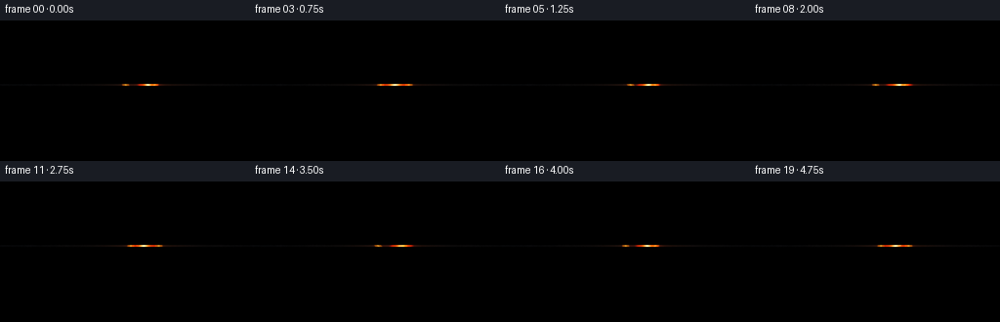
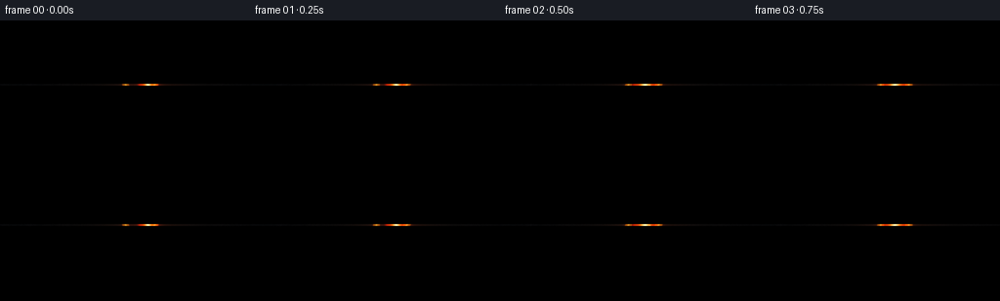
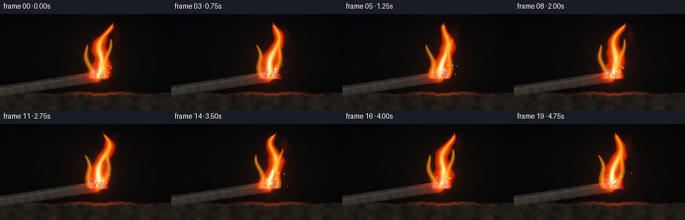
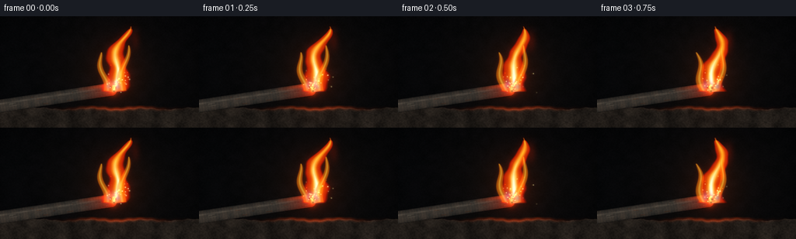

CODING AGENTS AS PIXEL WORLD MODELS
traex/GPT-5.6-Sol · material_0010
点击播放 · 原生 RGB 像素
逐轮保存的候选
回放视频、检查图与代码变化。
每份候选均可单独播放。实际图片检查记录在下方工具轨迹中。
候选 01播放与检查图
点击播放 · 原生 RGB 像素


展开代码变化
--- 上一保存版本
+++ 本次保存版本
@@ -0,0 +1,268 @@
+"""Procedural macro video of a burning iron bar.
+
+The renderer is deliberately self contained: it builds a dark workshop scene,
+a textured iron bar, a persistent turbulent flame, oxidation, and ballistic
+iron sparks from mathematical masks, then uses artifact_io for submission.
+"""
+from pathlib import Path
+import math
+import numpy as np
+import cv2
+from PIL import Image
+import artifact_io
+
+W, H, N, FPS = 256, 144, 20, 4.0
+S = 3
+WW, HH = W*S, H*S
+Y, X = np.mgrid[0:HH, 0:WW].astype(np.float32)
+x = X/S
+y = Y/S
+rng = np.random.default_rng(74119)
+
+
+def resize_noise(h, w, scale, seed):
+ """Smooth deterministic value noise in high resolution output space."""
+ rr = np.random.default_rng(seed)
+ gh = max(2, int(H/scale)+3)
+ gw = max(2, int(W/scale)+3)
+ small = rr.random((gh, gw), dtype=np.float32)
+ return cv2.resize(small, (w, h), interpolation=cv2.INTER_CUBIC)
+
+
+def blur(mask, sigma_px):
+ return cv2.GaussianBlur(mask.astype(np.float32), (0, 0), sigma_px*S)
+
+
+def over(im, color, alpha):
+ a = np.clip(alpha, 0, 1)[..., None]
+ return im*(1-a) + np.asarray(color, np.float32)*a
+
+
+def add(im, color, amount):
+ return np.clip(im + amount[..., None]*np.asarray(color, np.float32), 0, 1)
+
+# Fixed photographic grain and multi-scale material noise.
+fine = resize_noise(HH, WW, 1.5, 11) - .5
+mid = resize_noise(HH, WW, 8, 21) - .5
+coarse = resize_noise(HH, WW, 24, 35) - .5
+
+# Static workshop background: almost black, subtly warm around the combustion.
+rad = np.exp(-(((x-150)/102)**2 + ((y-72)/88)**2)*1.25)
+base = np.zeros((HH, WW, 3), np.float32)
+base[..., 0] = .020 + .040*rad + .012*mid
+base[..., 1] = .024 + .024*rad + .009*mid
+base[..., 2] = .031 + .012*rad + .012*mid
+# Out-of-focus vertical workshop structures.
+for cx, wid, col in [(15, 19, (.055,.060,.065)), (220, 30, (.035,.040,.045)), (64, 7, (.045,.039,.036))]:
+ m = np.exp(-((x-cx)/wid)**4) * (0.32 + 0.68*np.exp(-((y-75)/90)**2))
+ base = over(base, col, .20*m)
+# Vignette.
+vign = np.clip(((x-W/2)/(W*.69))**2 + ((y-H/2)/(H*.78))**2, 0, 1)
+base *= (1-.49*vign[..., None])
+
+# Rough firebrick / anvil shelf at the bottom.
+horizon = 119.0 + 1.2*np.sin(x*.095) + .45*np.sin(x*.41)
+stone = y > horizon
+stone_col = np.empty_like(base)
+sv = np.clip(.11 + .048*mid + .025*fine + .018*np.sin(x*.18), .04, .20)
+stone_col[...,0] = sv*1.10
+stone_col[...,1] = sv*.94
+stone_col[...,2] = sv*.80
+base = np.where(stone[...,None], stone_col, base)
+# top edge catches firelight later; fixed cracks and pits now
+pits = np.zeros((HH,WW), np.float32)
+for _ in range(46):
+ px = rng.uniform(0,W); py = rng.uniform(121,H); pr=rng.uniform(.25,1.4)
+ pits += np.exp(-((x-px)**2+(y-py)**2)/(2*pr*pr))
+base *= (1-.23*np.clip(pits,0,1)[...,None])
+
+# Geometry of diagonal bar, in base pixel units.
+A = np.array([-14.0, 118.0]); B = np.array([145.0, 94.0])
+v = B-A; length = float(np.linalg.norm(v)); u = v/length; nvec=np.array([-u[1],u[0]])
+rx=x-A[0]; ry=y-A[1]
+scoord=rx*u[0]+ry*u[1]
+dcoord=rx*nvec[0]+ry*nvec[1]
+bar_mask = ((scoord>=0)&(scoord<=length)&(np.abs(dcoord)<=8.3)).astype(np.float32)
+# Rounded, irregular end cap.
+cap = (((x-B[0])/5.5)**2 + ((y-B[1])/8.0)**2 <= 1).astype(np.float32)
+bar_mask=np.maximum(bar_mask,cap)
+bar_edge=blur(bar_mask, .35)
+# Cylindrical lighting and mottled oxidized steel.
+cross=np.sqrt(np.clip(1-(dcoord/8.4)**2,0,1))
+metal=np.empty_like(base)
+texture=.035*mid+.018*fine+.012*np.sin(scoord*.43)+.009*np.sin(scoord*1.7)
+metal[...,0]=.095+.125*cross+texture
+metal[...,1]=.089+.110*cross+texture*.65
+metal[...,2]=.082+.095*cross+texture*.42
+# cool narrow specular streak along upper shoulder
+spec=np.exp(-((dcoord+2.7)/1.15)**2)*(.06+.05*np.sin(scoord*.11)**2)
+metal += spec[...,None]*np.array([.72,.66,.56],np.float32)
+base=over(base, np.zeros(3), .45*blur(bar_mask,.8))
+base=over(base, metal, bar_edge*.98)
+# Parallel scale scratches and rust pocks constrained to bar.
+for _ in range(32):
+ ss=rng.uniform(5,length-8); dd=rng.uniform(-6.5,6.5); ll=rng.uniform(1,8)
+ qx=A[0]+u[0]*ss+nvec[0]*dd; qy=A[1]+u[1]*ss+nvec[1]*dd
+ qx2=qx+u[0]*ll; qy2=qy+u[1]*ll
+ lay=np.zeros((HH,WW),np.float32)
+ cv2.line(lay,(int(qx*S),int(qy*S)),(int(qx2*S),int(qy2*S)),1,max(1,int(rng.uniform(.4,1.0)*S)),cv2.LINE_AA)
+ lay*=bar_mask
+ if rng.random()<.42: base=over(base,(.30,.105,.025),lay*.22)
+ else: base=over(base,(.60,.57,.48),lay*.13)
+
+# Background flecks on the stone.
+for _ in range(22):
+ px=rng.uniform(0,W); py=rng.uniform(122,H)
+ m=np.exp(-((x-px)**2+(y-py)**2)/(2*rng.uniform(.08,.35)))
+ base=add(base,(.14,.12,.09),m*.14)
+
+# Persistent spark definitions: deterministic phase, velocities, curved paths.
+sparks=[]
+for i in range(34):
+ sparks.append(dict(
+ phase=rng.uniform(0,1), life=rng.uniform(.48,1.05),
+ vx=rng.uniform(-20,42), vy=rng.uniform(-66,-17),
+ ox=rng.uniform(-3.5,4.5), oy=rng.uniform(-3,3),
+ bright=rng.uniform(.58,1.0), size=rng.uniform(.34,.76)))
+
+
+def line_layer(p1,p2,width=1.0):
+ m=np.zeros((HH,WW),np.float32)
+ cv2.line(m,(int(p1[0]*S),int(p1[1]*S)),(int(p2[0]*S),int(p2[1]*S)),1,max(1,int(width*S)),cv2.LINE_AA)
+ return m
+
+
+def make_flame(frame, im):
+ t=frame/FPS
+ # Broad illumination cast by a steady but gently breathing burn.
+ pulse=.96+.045*math.sin(t*7.1)+.025*math.sin(t*11.7+.8)
+ halo=np.exp(-(((x-149)/37)**2+((y-76)/49)**2)*1.35)
+ im=add(im,(.48,.115,.012),halo*.22*pulse)
+ # Hot reflection along the bar's final 44 pixels and on nearby firebrick.
+ hot=np.clip((scoord-(length-48))/48,0,1)*bar_mask
+ im=over(im,(.88,.115,.015),hot*(.10+.42*hot)*pulse)
+ rim=np.exp(-((dcoord+5.7)/2.3)**2)*hot
+ im=add(im,(1,.25,.02),rim*.35)
+ edge_light=np.exp(-((y-horizon)/2.2)**2)*np.exp(-((x-151)/50)**2)*(y>115)
+ im=add(im,(.73,.18,.025),edge_light*.55*pulse)
+
+ # Flame coordinate. z=0 at metal, z=1 at top.
+ z=(96-y)/80.0
+ valid=(z>=-.02)&(z<=1.04)
+ # Animated centreline: coherent, smooth turbulent motion, increasing upward.
+ lean=12.0*z
+ sway=(2.0+6.7*z**1.4)*np.sin(2.38*z*math.pi + t*3.18)
+ sway+=2.7*z*np.sin(7.8*z-t*4.6+1.1)
+ center=146.5+lean+sway
+ width=(15.8*(1-np.clip(z,0,1))**.53+1.25)
+ width*=1+.12*np.sin(13*z-t*5.1)+.065*np.sin(29*z+t*3.3)
+ dx=x-center
+ q=np.abs(dx)/(width+1e-3)
+ # Keep upper flame broken into licking tongues rather than a smooth cone.
+ contour=1-q
+ outer=np.clip(contour*4.0+.10,0,1)*valid
+ outer*=np.clip((1.055-z)*13,0,1)*np.clip((z+.035)*25,0,1)
+ outer=blur(outer,.28)
+ glow=blur(outer,5.0)
+ im=add(im,(.72,.09,.006),glow*.28*pulse)
+
+ # A detached high tongue creates a characteristic forked flame.
+ tx=171+3.2*math.sin(t*3.0+1.4)
+ ty=31+2.0*math.sin(t*4.1)
+ tongue=np.exp(-(((x-tx)/(3.4+1.1*math.sin(t*2.3)**2))**2+((y-ty)/13.5)**2)*1.4)
+ tongue*=1/(1+np.exp((y-49)*2))
+ im=add(im,(1.0,.14,.004),blur(tongue,3.2)*.20)
+
+ # Temperature palette across the main plume: dark orange skin, lemon body,
+ # near-white base/core. Layers retain translucent detail instead of a blob.
+ shell=outer*np.clip(.50+.42*q,0,1)
+ im=over(im,(.93,.075,.003),shell*.78)
+ amber=outer*np.clip(1.20-q*1.32,0,1)*np.clip(1.13-z*.20,0,1)
+ im=over(im,(1.0,.43,.015),amber*.83)
+ yellow=outer*np.clip(1.0-q*2.05,0,1)*np.clip(1.05-z*.38,0,1)
+ yellow*=.89+.11*np.sin(z*31-t*8.2)
+ im=over(im,(1.0,.86,.22),yellow*.91)
+ core=outer*np.clip(1-q*3.2,0,1)*np.clip((.73-z)*2.4,0,1)
+ im=over(im,(1.0,.985,.79),core*.96)
+ white=outer*np.clip(1-q*5.4,0,1)*np.clip((.43-z)*4.0,0,1)
+ im=over(im,(1.0,1.0,.94),white*.98)
+
+ # Curling side lick on the left and a small right-hand fork, animated.
+ for side,phase,height in [(-1,.7,.62),(1,2.4,.73)]:
+ zz=(96-y)/(80*height)
+ vv=(zz>=0)&(zz<=1)
+ cc=146+side*(9+9*zz)+3*np.sin(zz*6.5+t*3.2+phase)
+ ww=5.5*(1-zz)**.55+.6
+ mm=np.clip((1-np.abs(x-cc)/ww)*4,0,1)*vv
+ mm=blur(mm,.35)
+ im=add(im,(1.0,.19,.006),blur(mm,2.2)*.16)
+ im=over(im,(1.0,.52,.035),mm*.52)
+ inn=mm*np.clip(1-np.abs(x-cc)/(ww*.46+1e-3),0,1)
+ im=over(im,(1.0,.88,.30),inn*.48)
+
+ # Cobalt/azure base fringe, characteristic around the intensely hot metal.
+ for off,ph in [(-6,0.2),(0,2.0),(7,4.3)]:
+ cx=146+off+1.2*math.sin(t*4.4+ph)
+ blue=np.exp(-((x-cx)/4.3)**2 - ((y-(93-2*math.sin(t*3+ph)))/7.7)**2)
+ blue*=np.clip((99-y)/8,0,1)
+ im=add(im,(.03,.25,1.0),blur(blue,2.2)*.16)
+ im=over(im,(.12,.52,1.0),blue*.38)
+
+ # Molten end cap: white center, orange oxide perimeter and dark islands.
+ end=np.exp(-(((x-145.3)/6.2)**2+((y-94.1)/7.4)**2)*1.25)
+ im=add(im,(1,.12,.005),blur(end,5)*.48)
+ im=over(im,(1.0,.24,.008),end*.92)
+ ecore=np.exp(-(((x-146.0)/3.15)**2+((y-93.4)/4.8)**2)*1.4)
+ im=over(im,(1.0,.91,.47),ecore*.98)
+ for k,(ox,oy) in enumerate([(-2.9,-2.5),(1.5,2.6),(2.8,-1.4)]):
+ island=np.exp(-((x-(145+ox))**2+(y-(94+oy))**2)/(1.0+0.4*k))
+ im=over(im,(.19,.055,.018),island*.47)
+
+ # Iron sparks with actual temporal trajectories and glowing motion trails.
+ period=1.05
+ for i,sp in enumerate(sparks):
+ age=((t/period + sp['phase'])%1.0)*sp['life']
+ # brief visible phase; reset emits continuously from the hot end
+ if age > sp['life']*.84: continue
+ vx,vy=sp['vx'],sp['vy']
+ px=146+sp['ox']+vx*age
+ py=93+sp['oy']+vy*age+37*age*age
+ if px < -2 or px>258 or py<0 or py>145: continue
+ dt=.055
+ qx=146+sp['ox']+vx*max(0,age-dt)
+ qy=93+sp['oy']+vy*max(0,age-dt)+37*max(0,age-dt)**2
+ streak=line_layer((qx,qy),(px,py),sp['size'])
+ fade=(1-age/(sp['life']*.88))**.55*sp['bright']
+ im=add(im,(1.0,.20,.005),blur(streak,2.1)*.33*fade)
+ im=add(im,(1.0,.61,.055),blur(streak,.55)*.88*fade)
+ dot=np.exp(-((x-px)**2+(y-py)**2)/(2*(sp['size']*.70+.18)**2))
+ im=over(im,(1,.965,.66),dot*np.clip(fade*1.45,0,1))
+
+ # A handful of tiny rising oxide motes close to the plume.
+ for j in range(7):
+ a=(t*.25+j*.139)%1
+ px=148+13*np.sin(j*3.1+a*5.8)+10*a
+ py=91-67*a
+ dot=np.exp(-((x-px)**2+(y-py)**2)/(2*(.18+.28*(1-a))**2))
+ im=add(im,(1,.33,.015),dot*(.55*(1-a)))
+ return im
+
+frames=[]
+for f in range(N):
+ im=base.copy()
+ im=make_flame(f,im)
+ # Fine sensor grain is fixed spatially with a tiny changing component.
+ temporal=np.random.default_rng(900+f).normal(0,.0032,(HH,WW,1)).astype(np.float32)
+ im=np.clip(im + fine[...,None]*.008 + temporal,0,1)
+ # Gentle camera bloom in display-referred RGB.
+ hi=np.clip((im.max(axis=2)-.68)*2.2,0,1)
+ bloom=blur(hi,2.0)
+ im=add(im,(1.0,.34,.035),bloom*.12)
+ arr=(np.clip(im,0,1)*255+.5).astype(np.uint8)
+ arr=np.asarray(Image.fromarray(arr).resize((W,H),Image.Resampling.LANCZOS))
+ frames.append(arr)
+
+frames=np.stack(frames).astype(np.uint8)
+assert frames.shape==(N,H,W,3)
+artifact_io.save(frames, Path(__file__).resolve().parent)
+print('saved',frames.shape,frames.dtype,'range',int(frames.min()),int(frames.max()))
候选 02播放与检查图
点击播放 · 原生 RGB 像素


展开代码变化
--- 上一保存版本
+++ 本次保存版本
@@ -151,7 +151,8 @@
valid=(z>=-.02)&(z<=1.04)
# Animated centreline: coherent, smooth turbulent motion, increasing upward.
lean=12.0*z
- sway=(2.0+6.7*z**1.4)*np.sin(2.38*z*math.pi + t*3.18)
+ zsafe=np.clip(z,0,1)
+ sway=(2.0+6.7*zsafe**1.4)*np.sin(2.38*z*math.pi + t*3.18)
sway+=2.7*z*np.sin(7.8*z-t*4.6+1.1)
center=146.5+lean+sway
width=(15.8*(1-np.clip(z,0,1))**.53+1.25)
@@ -170,7 +171,7 @@
tx=171+3.2*math.sin(t*3.0+1.4)
ty=31+2.0*math.sin(t*4.1)
tongue=np.exp(-(((x-tx)/(3.4+1.1*math.sin(t*2.3)**2))**2+((y-ty)/13.5)**2)*1.4)
- tongue*=1/(1+np.exp((y-49)*2))
+ tongue*=1/(1+np.exp(np.clip((y-49)*2,-60,60)))
im=add(im,(1.0,.14,.004),blur(tongue,3.2)*.20)
# Temperature palette across the main plume: dark orange skin, lemon body,
@@ -192,7 +193,7 @@
zz=(96-y)/(80*height)
vv=(zz>=0)&(zz<=1)
cc=146+side*(9+9*zz)+3*np.sin(zz*6.5+t*3.2+phase)
- ww=5.5*(1-zz)**.55+.6
+ ww=5.5*np.clip(1-zz,0,1)**.55+.6
mm=np.clip((1-np.abs(x-cc)/ww)*4,0,1)*vv
mm=blur(mm,.35)
im=add(im,(1.0,.19,.006),blur(mm,2.2)*.16)
可观测工具轨迹
实际执行的命令与返回图片。
命令 1exit 0
/bin/bash -lc "cat prompt.txt && printf '\\n---RULES---\\n' && cat GENERATION_RULES.md && printf '\\n---SPEC---\\n' && cat task_spec.json"
命令 2exit 0
/bin/bash -lc "find . -maxdepth 2 -type f -printf '%p %s bytes\\n' | sort && printf '\\nTOOLS\\n' && command -v ffmpeg || true && command -v python3 || true && python3 - <<'PY'
try:
import cv2; print('cv2', cv2.__version__)
except Exception as e: print('no cv2',e)
try:
from PIL import Image; print('PIL yes')
except Exception as e: print('no PIL',e)
PY"命令 3exit 0
/bin/bash -lc 'cat artifact_io.py'
命令 4exit 2
/bin/bash -lc "cat > generate.py <<'PY'
\"\"\"Procedural macro video of a burning iron bar.
The renderer is deliberately self contained: it builds a dark workshop scene,
a textured iron bar, a persistent turbulent flame, oxidation, and ballistic
iron sparks from mathematical masks, then uses artifact_io for submission.
\"\"\"
from pathlib import Path
import math
import numpy as np
import cv2
from PIL import Image
import artifact_io
W, H, N, FPS = 256, 144, 20, 4.0
S = 3
WW, HH = W*S, H*S
Y, X = np.mgrid[0:HH, 0:WW].astype(np.float32)
x = X/S
y = Y/S
rng = np.random.default_rng(74119)
def resize_noise(h, w, scale, seed):
\"\"\"Smooth deterministic value noise in high resolution output space.\"\"\"
rr = np.random.default_rng(seed)
gh = max(2, int(H/scale)+3)
gw = max(2, int(W/scale)+3)
small = rr.random((gh, gw), dtype=np.float32)
return cv2.resize(small, (w, h), interpolation=cv2.INTER_CUBIC)
def blur(mask, sigma_px):
return cv2.GaussianBlur(mask.astype(np.float32), (0, 0), sigma_px*S)
def over(im, color, alpha):
a = np.clip(alpha, 0, 1)[..., None]
return im*(1-a) + np.asarray(color, np.float32)*a
def add(im, color, amount):
return np.clip(im + amount[..., None]*np.asarray(color, np.float32), 0, 1)
# Fixed photographic grain and multi-scale material noise.
fine = resize_noise(HH, WW, 1.5, 11) - .5
mid = resize_noise(HH, WW, 8, 21) - .5
coarse = resize_noise(HH, WW, 24, 35) - .5
# Static workshop background: almost black, subtly warm around the combustion.
rad = np.exp(-(((x-150)/102)**2 + ((y-72)/88)**2)*1.25)
base = np.zeros((HH, WW, 3), np.float32)
base[..., 0] = .020 + .040*rad + .012*mid
base[..., 1] = .024 + .024*rad + .009*mid
base[..., 2] = .031 + .012*rad + .012*mid
# Out-of-focus vertical workshop structures.
for cx, wid, col in [(15, 19, (.055,.060,.065)), (220, 30, (.035,.040,.045)), (64, 7, (.045,.039,.036))]:
m = np.exp(-((x-cx)/wid)**4) * (0.32 + 0.68*np.exp(-((y-75)/90)**2))
base = over(base, col, .20*m)
# Vignette.
vign = np.clip(((x-W/2)/(W*.69))**2 + ((y-H/2)/(H*.78))**2, 0, 1)
base *= (1-.49*vign[..., None])
# Rough firebrick / anvil shelf at the bottom.
horizon = 119.0 + 1.2*np.sin(x*.095) + .45*np.sin(x*.41)
stone = y > horizon
stone_col = np.empty_like(base)
sv = np.clip(.11 + .048*mid + .025*fine + .018*np.sin(x*.18), .04, .20)
stone_col[...,0] = sv*1.10
stone_col[...,1] = sv*.94
stone_col[...,2] = sv*.80
base = np.where(stone[...,None], stone_col, base)
# top edge catches firelight later; fixed cracks and pits now
pits = np.zeros((HH,WW), np.float32)
for _ in range(46):
px = rng.uniform(0,W); py = rng.uniform(121,H); pr=rng.uniform(.25,1.4)
pits += np.exp(-((x-px)**2+(y-py)**2)/(2*pr*pr))
base *= (1-.23*np.clip(pits,0,1)[...,None])
# Geometry of diagonal bar, in base pixel units.
A = np.array([-14.0, 118.0]); B = np.array([145.0, 94.0])
v = B-A; length = float(np.linalg.norm(v)); u = v/length; nvec=np.array([-u[1],u[0]])
rx=x-A[0]; ry=y-A[1]
scoord=rx*u[0]+ry*u[1]
dcoord=rx*nvec[0]+ry*nvec[1]
bar_mask = ((scoord>=0)&(scoord<=length)&(np.abs(dcoord)<=8.3)).astype(np.float32)
# Rounded, irregular end cap.
cap = (((x-B[0])/5.5)**2 + ((y-B[1])/8.0)**2 <= 1).astype(np.float32)
bar_mask=np.maximum(bar_mask,cap)
bar_edge=blur(bar_mask, .35)
# Cylindrical lighting and mottled oxidized steel.
cross=np.sqrt(np.clip(1-(dcoord/8.4)**2,0,1))
metal=np.empty_like(base)
texture=.035*mid+.018*fine+.012*np.sin(scoord*.43)+.009*np.sin(scoord*1.7)
metal[...,0]=.095+.125*cross+texture
metal[...,1]=.089+.110*cross+texture*.65
metal[...,2]=.082+.095*cross+texture*.42
# cool narrow specular streak along upper shoulder
spec=np.exp(-((dcoord+2.7)/1.15)**2)*(.06+.05*np.sin(scoord*.11)**2)
metal += spec[...,None]*np.array([.72,.66,.56],np.float32)
base=over(base, np.zeros(3), .45*blur(bar_mask,.8))
base=over(base, metal, bar_edge*.98)
# Parallel scale scratches and rust pocks constrained to bar.
for _ in range(32):
ss=rng.uniform(5,length-8); dd=rng.uniform(-6.5,6.5); ll=rng.uniform(1,8)
qx=A[0]+u[0]*ss+nvec[0]*dd; qy=A[1]+u[1]*ss+nvec[1]*dd
qx2=qx+u[0]*ll; qy2=qy+u[1]*ll
lay=np.zeros((HH,WW),np.float32)
cv2.line(lay,(int(qx*S),int(qy*S)),(int(qx2*S),int(qy2*S)),1,float(rng.uniform(.4,1.0))*S,cv2.LINE_AA)
lay*=bar_mask
if rng.random()<.42: base=over(base,(.30,.105,.025),lay*.22)
else: base=over(base,(.60,.57,.48),lay*.13)
# Background flecks on the stone.
for _ in range(22):
px=rng.uniform(0,W); py=rng.uniform(122,H)
m=np.exp(-((x-px)**2+(y-py)**2)/(2*rng.uniform(.08,.35)))
base=add(base,(.14,.12,.09),m*.14)
# Persistent spark definitions: deterministic phase, velocities, curved paths.
sparks=[]
for i in range(34):
sparks.append(dict(
phase=rng.uniform(0,1), life=rng.uniform(.48,1.05),
vx=rng.uniform(-20,42), vy=rng.uniform(-66,-17),
ox=rng.uniform(-3.5,4.5), oy=rng.uniform(-3,3),
bright=rng.uniform(.58,1.0), size=rng.uniform(.34,.76)))
def line_layer(p1,p2,width=1.0):
m=np.zeros((HH,WW),np.float32)
cv2.line(m,(int(p1[0]*S),int(p1[1]*S)),(int(p2[0]*S),int(p2[1]*S)),1,max(1,int(width*S)),cv2.LINE_AA)
return m
def make_flame(frame, im):
t=frame/FPS
# Broad illumination cast by a steady but gently breathing burn.
pulse=.96+.045*math.sin(t*7.1)+.025*math.sin(t*11.7+.8)
halo=np.exp(-(((x-149)/37)**2+((y-76)/49)**2)*1.35)
im=add(im,(.48,.115,.012),halo*.22*pulse)
# Hot reflection along the bar's final 44 pixels and on nearby firebrick.
hot=np.clip((scoord-(length-48))/48,0,1)*bar_mask
im=over(im,(.88,.115,.015),hot*(.10+.42*hot)*pulse)
rim=np.exp(-((dcoord+5.7)/2.3)**2)*hot
im=add(im,(1,.25,.02),rim*.35)
edge_light=np.exp(-((y-horizon)/2.2)**2)*np.exp(-((x-151)/50)**2)*(y>115)
im=add(im,(.73,.18,.025),edge_light*.55*pulse)
# Flame coordinate. z=0 at metal, z=1 at top.
z=(96-y)/80.0
valid=(z>=-.02)&(z<=1.04)
# Animated centreline: coherent, smooth turbulent motion, increasing upward.
lean=12.0*z
sway=(2.0+6.7*z**1.4)*np.sin(2.38*z*math.pi + t*3.18)
sway+=2.7*z*np.sin(7.8*z-t*4.6+1.1)
center=146.5+lean+sway
width=(15.8*(1-np.clip(z,0,1))**.53+1.25)
width*=1+.12*np.sin(13*z-t*5.1)+.065*np.sin(29*z+t*3.3)
dx=x-center
q=np.abs(dx)/(width+1e-3)
# Keep upper flame broken into licking tongues rather than a smooth cone.
contour=1-q
outer=np.clip(contour*4.0+.10,0,1)*valid
outer*=np.clip((1.055-z)*13,0,1)*np.clip((z+.035)*25,0,1)
outer=blur(outer,.28)
glow=blur(outer,5.0)
im=add(im,(.72,.09,.006),glow*.28*pulse)
# A detached high tongue creates a characteristic forked flame.
tx=171+3.2*math.sin(t*3.0+1.4)
ty=31+2.0*math.sin(t*4.1)
tongue=np.exp(-(((x-tx)/(3.4+1.1*math.sin(t*2.3)**2))**2+((y-ty)/13.5)**2)*1.4)
tongue*=1/(1+np.exp((y-49)*2))
im=add(im,(1.0,.14,.004),blur(tongue,3.2)*.20)
# Temperature palette across the main plume: dark orange skin, lemon body,
# near-white base/core. Layers retain translucent detail instead of a blob.
shell=outer*np.clip(.50+.42*q,0,1)
im=over(im,(.93,.075,.003),shell*.78)
amber=outer*np.clip(1.20-q*1.32,0,1)*np.clip(1.13-z*.20,0,1)
im=over(im,(1.0,.43,.015),amber*.83)
yellow=outer*np.clip(1.0-q*2.05,0,1)*np.clip(1.05-z*.38,0,1)
yellow*=.89+.11*np.sin(z*31-t*8.2)
im=over(im,(1.0,.86,.22),yellow*.91)
core=outer*np.clip(1-q*3.2,0,1)*np.clip((.73-z)*2.4,0,1)
im=over(im,(1.0,.985,.79),core*.96)
white=outer*np.clip(1-q*5.4,0,1)*np.clip((.43-z)*4.0,0,1)
im=over(im,(1.0,1.0,.94),white*.98)
# Curling side lick on the left and a small right-hand fork, animated.
for side,phase,height in [(-1,.7,.62),(1,2.4,.73)]:
zz=(96-y)/(80*height)
vv=(zz>=0)&(zz<=1)
cc=146+side*(9+9*zz)+3*np.sin(zz*6.5+t*3.2+phase)
ww=5.5*(1-zz)**.55+.6
mm=np.clip((1-np.abs(x-cc)/ww)*4,0,1)*vv
mm=blur(mm,.35)
im=add(im,(1.0,.19,.006),blur(mm,2.2)*.16)
im=over(im,(1.0,.52,.035),mm*.52)
inn=mm*np.clip(1-np.abs(x-cc)/(ww*.46+1e-3),0,1)
im=over(im,(1.0,.88,.30),inn*.48)
# Cobalt/azure base fringe, characteristic around the intensely hot metal.
for off,ph in [(-6,0.2),(0,2.0),(7,4.3)]:
cx=146+off+1.2*math.sin(t*4.4+ph)
blue=np.exp(-((x-cx)/4.3)**2 - ((y-(93-2*math.sin(t*3+ph)))/7.7)**2)
blue*=np.clip((99-y)/8,0,1)
im=add(im,(.03,.25,1.0),blur(blue,2.2)*.16)
im=over(im,(.12,.52,1.0),blue*.38)
# Molten end cap: white center, orange oxide perimeter and dark islands.
end=np.exp(-(((x-145.3)/6.2)**2+((y-94.1)/7.4)**2)*1.25)
im=add(im,(1,.12,.005),blur(end,5)*.48)
im=over(im,(1.0,.24,.008),end*.92)
ecore=np.exp(-(((x-146.0)/3.15)**2+((y-93.4)/4.8)**2)*1.4)
im=over(im,(1.0,.91,.47),ecore*.98)
for k,(ox,oy) in enumerate([(-2.9,-2.5),(1.5,2.6),(2.8,-1.4)]):
island=np.exp(-((x-(145+ox))**2+(y-(94+oy))**2)/(1.0+0.4*k))
im=over(im,(.19,.055,.018),island*.47)
# Iron sparks with actual temporal trajectories and glowing motion trails.
period=1.05
for i,sp in enumerate(sparks):
age=((t/period + sp['phase'])%1.0)*sp['life']
# brief visible phase; reset emits continuously from the hot end
if age > sp['life']*.84: continue
vx,vy=sp['vx'],sp['vy']
px=146+sp['ox']+vx*age
py=93+sp['oy']+vy*age+37*age*age
if px < -2 or px>258 or py<0 or py>145: continue
dt=.055
qx=146+sp['ox']+vx*max(0,age-dt)
qy=93+sp['oy']+vy*max(0,age-dt)+37*max(0,age-dt)**2
streak=line_layer((qx,qy),(px,py),sp['size'])
fade=(1-age/(sp['life']*.88))**.55*sp['bright']
im=add(im,(1.0,.20,.005),blur(streak,2.1)*.33*fade)
im=add(im,(1.0,.61,.055),blur(streak,.55)*.88*fade)
dot=np.exp(-((x-px)**2+(y-py)**2)/(2*(sp['size']*.70+.18)**2))
im=over(im,(1,.965,.66),dot*np.clip(fade*1.45,0,1))
# A handful of tiny rising oxide motes close to the plume.
for j in range(7):
a=(t*.25+j*.139)%1
px=148+13*np.sin(j*3.1+a*5.8)+10*a
py=91-67*a
dot=np.exp(-((x-px)**2+(y-py)**2)/(2*(.18+.28*(1-a))**2))
im=add(im,(1,.33,.015),dot*(.55*(1-a)))
return im
frames=[]
for f in range(N):
im=base.copy()
im=make_flame(f,im)
# Fine sensor grain is fixed spatially with a tiny changing component.
temporal=np.random.default_rng(900+f).normal(0,.0032,(HH,WW,1)).astype(np.float32)
im=np.clip(im + fine[...,None]*.008 + temporal,0,1)
# Gentle camera bloom in display-referred RGB.
hi=np.clip((im.max(axis=2)-.68)*2.2,0,1)
bloom=blur(hi,2.0)
im=add(im,(1.0,.34,.035),bloom*.12)
arr=(np.clip(im,0,1)*255+.5).astype(np.uint8)
arr=np.asarray(Image.fromarray(arr).resize((W,H),Image.Resampling.LANCZOS))
frames.append(arr)
frames=np.stack(frames).astype(np.uint8)
assert frames.shape==(N,H,W,3)
artifact_io.save(frames, Path(__file__).resolve().parent)
print('saved',frames.shape,frames.dtype,'range',int(frames.min()),int(frames.max()))
PY
python3 generate.py
ls -lh pixels.npz index.html inspection.png frames/00.png frames/19.png"命令 5exit 0
/bin/bash -lc "python3 - <<'PY' p='generate.py' s=open(p).read().replace(\"1,float(rng.uniform(.4,1.0))*S,cv2.LINE_AA)\",\"1,max(1,int(rng.uniform(.4,1.0)*S)),cv2.LINE_AA)\") open(p,'w').write(s) PY python3 generate.py ls -lh pixels.npz index.html inspection.png transition_check.png frames/00.png frames/19.png"
命令 6exit 0
/bin/bash -lc "python3 - <<'PY' p='generate.py'; s=open(p).read() s=s.replace(\"sway=(2.0+6.7*z**1.4)\", \"zsafe=np.clip(z,0,1)\\n sway=(2.0+6.7*zsafe**1.4)\") s=s.replace(\"tongue*=1/(1+np.exp((y-49)*2))\", \"tongue*=1/(1+np.exp(np.clip((y-49)*2,-60,60)))\") s=s.replace(\"ww=5.5*(1-zz)**.55+.6\", \"ww=5.5*np.clip(1-zz,0,1)**.55+.6\") open(p,'w').write(s) PY python3 generate.py"
命令 7exit 0
/bin/bash -lc "python3 - <<'PY'
from pathlib import Path
import numpy as np
from PIL import Image
fs=[]
for p in sorted(Path('frames').glob('*.png')):
a=np.asarray(Image.open(p)); fs.append(a)
f=np.stack(fs)
print('frames',f.shape,f.dtype)
print('mean RGB',f.mean((0,1,2)).round(2),'max RGB',f.max((0,1,2)))
print('bright pixels/frame >200', (f.max(3)>200).sum((1,2)).tolist())
print('motion MAE adjacent',np.abs(f[1:].astype(int)-f[:-1]).mean((1,2,3)).round(3).tolist())
print('unique colors frame0',len(np.unique(f[0].reshape(-1,3),axis=0)))
z=np.load('pixels.npz')['pixels']
print('packed tensor',z.shape,z.dtype,'artifacts',[(p.name,p.stat().st_size) for p in [Path('pixels.npz'),Path('index.html'),Path('inspection.png'),Path('transition_check.png')]])
PY"保存候选 2 份；完成命令 7 次；可验证图片返回 0 张。原始 API 响应与完整日志保留在本地。